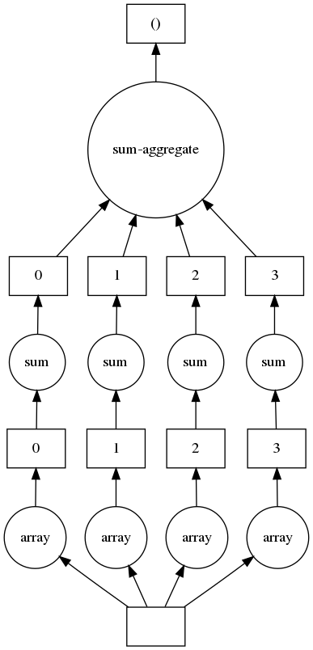
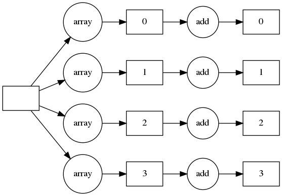
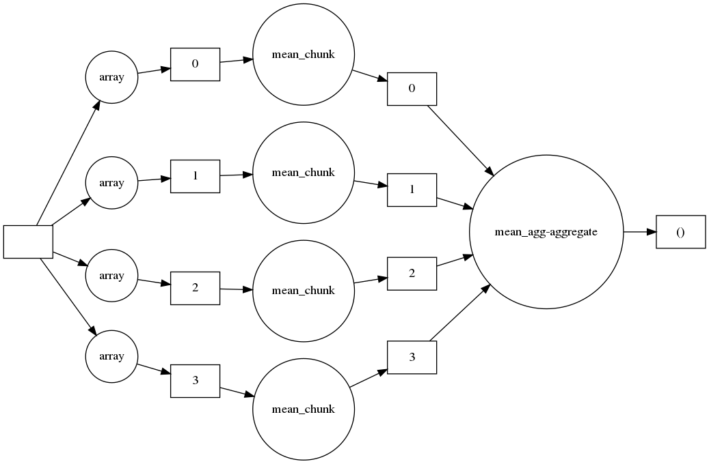
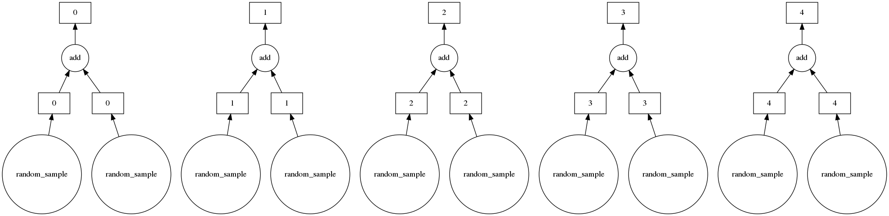

Using Dask for Arrays¶
This post includes code from Scalable-Data-Analysis-in-Python-with-Dask.
import numpy as np
import dask.array as da
np_arr = np.random.randint(20, size=20)
np_arr
array([12, 18, 17, 7, 5, 9, 11, 3, 5, 15, 13, 13, 5, 12, 11, 16, 4,
10, 9, 7])
dask_arr = da.random.randint(20, size=20, chunks=5)
dask_arr
|
## This is simply because Dask does lazy evaluaion.
### You need to call `compute()` to start the execution
dask_arr.compute()
array([ 3, 17, 5, 11, 19, 14, 14, 11, 9, 18, 9, 7, 10, 13, 10, 10, 11,
10, 9, 2])
dask_arr.chunks
((5, 5, 5, 5),)
dask_arr_from_np = da.from_array(np_arr, chunks=5)
dask_arr_from_np
|
dask_arr_from_np.compute()
array([12, 18, 17, 7, 5, 9, 11, 3, 5, 15, 13, 13, 5, 12, 11, 16, 4,
10, 9, 7])
### array operations into a graph to tasks
#### See : http://docs.dask.org/en/latest/graphviz.html
dask_arr_from_np.sum().visualize()

dask_arr_from_np.sum().visualize(rankdir="LR")

(dask_arr_from_np+1).visualize(rankdir="LR")

dask_arr_mean = da.mean(dask_arr_from_np)
dask_arr_mean.compute()
10.1
dask_arr_mean.visualize(rankdir="LR")

x = da.random.random(10, chunks=2)
y = da.random.random(10, chunks=2)
sum_x_y = da.add(x, y) #similar to numpy.add
mean_x_y = da.mean(sum_x_y)
sum_x_y.compute()
array([0.96028343, 0.55946179, 1.11161829, 1.28233368, 0.53130934,
0.86805782, 0.20173099, 0.77596276, 0.92576765, 1.04750609])
sum_x_y.visualize()

mean_x_y.visualize()

da_arr_large = da.random.randint(10000, size=(50000, 50000),
chunks=(5000, 1000))
da_sum_large = da_arr_large.sum()
### Get no. bytes using `nbytes` : http://docs.dask.org/en/latest/array-api.html#dask.array.Array.nbytes
da_arr_large.nbytes
20000000000
### Convert bytes to GB, 1Gb = 1e+9 bytes
da_arr_large.nbytes/1e+9
20.0
da_sum_large.compute()
12498643590734
# Dask 2
size_tuple = (500,500)
chunks_tuple = (10,500)
da_arr = da.random.randint(10, size=size_tuple,
chunks=chunks_tuple)
da_arr2 = da.random.randint(10, size=size_tuple,
chunks=chunks_tuple)
def random_func(x):
return np.mean((((x * 2).T)**2),axis=0)
gufoo = da.gufunc(random_func, signature="(i)->()",
output_dtypes=float,
vectorize=True)
random_op_arr = gufoo(da_arr)
random_op_arr.compute()
array([112.056, 107.44 , 111.024, 109.656, 118.832, 109.84 , 117.2 ,
111.952, 116.312, 117.368, 128.568, 111.144, 110.656, 112.648,
115.24 , 114.624, 113.912, 109.632, 112.864, 113.488, 119.248,
121.4 , 108.272, 118.784, 114.968, 115.216, 107.872, 113.6 ,
112.456, 112.48 , 114.864, 119.28 , 112.656, 110.208, 109.728,
120.576, 119.632, 118.12 , 112.888, 116.384, 113.192, 106.84 ,
111.72 , 115.928, 106.08 , 114.568, 121.512, 115.384, 113.864,
107.104, 114.32 , 116.176, 117.28 , 116.976, 117.784, 110.088,
121.696, 114.2 , 113.864, 116.072, 112.344, 113.808, 113.968,
110.472, 119.536, 113.84 , 109.328, 116.552, 119.056, 113.84 ,
117.872, 114.928, 116.336, 115.192, 115.808, 106.984, 116.984,
114.536, 116.496, 111.968, 115.216, 108.24 , 119.52 , 116.136,
111.144, 111.712, 119.224, 114.312, 110.464, 110.216, 111.288,
119.6 , 108.264, 114.456, 119.016, 107.032, 114.832, 108.056,
105.712, 110.64 , 103.4 , 106.768, 118.216, 112.44 , 113.728,
114.6 , 117.832, 108.288, 117.92 , 113.12 , 121.984, 112.776,
123.144, 115.968, 112.44 , 115.712, 112.144, 108.448, 114.752,
108.376, 101.296, 102.992, 117.872, 114.056, 115.736, 115.528,
122.072, 130.168, 106.992, 109.912, 117.872, 112.152, 112.184,
113.544, 116.496, 112.832, 108.712, 116.96 , 120.984, 117.808,
112.272, 111.816, 118.872, 116.376, 118.992, 112.344, 124.672,
97.576, 112.496, 117.92 , 102.392, 109.992, 112.016, 117.92 ,
108.352, 112.376, 121.008, 117.808, 113.504, 125.592, 114.936,
111.456, 116.488, 104.744, 114.136, 114. , 107.256, 117.84 ,
111.872, 109.152, 118.752, 112.32 , 116.16 , 106.696, 109.472,
111.968, 118.264, 115.088, 112.864, 110.016, 111.888, 111.84 ,
118.488, 107.952, 121.52 , 126.52 , 112.12 , 110.952, 115.328,
110.064, 106.36 , 118.96 , 109.68 , 117.776, 107.112, 111.152,
113.888, 113.408, 114.992, 117.632, 116.648, 117.112, 118.2 ,
116.36 , 113.104, 113.6 , 112.208, 112.592, 117.192, 102.832,
112.08 , 113.744, 116.048, 117.368, 113.96 , 111.24 , 121.824,
112.56 , 110.192, 130.776, 111.656, 119.984, 113.592, 113.592,
106.664, 125.192, 113.6 , 117.12 , 106.24 , 112.856, 114.544,
117.16 , 108.344, 112.208, 109.112, 124.824, 109.824, 106.352,
115.568, 112.64 , 112.904, 112.736, 112.52 , 124.808, 120.32 ,
114.472, 119.528, 113.456, 112.448, 118.672, 110.016, 116.16 ,
122.048, 111.088, 114.56 , 107.448, 115.328, 111.656, 108.688,
116.904, 110.8 , 108.896, 112.136, 115.896, 111.848, 108.808,
114.504, 124.552, 116.248, 114.576, 110.56 , 112.152, 117.576,
125.44 , 110.72 , 108.072, 115.192, 116.048, 107.76 , 111.376,
121.608, 115.256, 113.84 , 105.672, 115.024, 115.864, 114.304,
123.344, 114.624, 115.696, 113.288, 116.688, 109.048, 125.264,
118.8 , 112.2 , 114.312, 109.728, 116.064, 113.808, 106.912,
109.288, 117. , 114.632, 114.456, 110.168, 111.976, 117.816,
110.04 , 103.048, 113.656, 112.504, 113.8 , 120.04 , 120.224,
110.68 , 110.096, 116.12 , 113.424, 107.408, 111.296, 111.512,
117.432, 105.96 , 115.992, 118.44 , 110.024, 119.216, 111.664,
119.184, 109.824, 116.736, 116.76 , 107.544, 120.44 , 115.08 ,
110.136, 112.144, 113.888, 111.32 , 109.952, 117.096, 111.152,
115.728, 110.832, 113.312, 113.664, 112.016, 111.952, 114.896,
114.728, 107.848, 108.832, 122.384, 111.824, 107.384, 117.504,
117.344, 110.144, 109.568, 101.36 , 111.944, 105.512, 115.792,
112.08 , 104.568, 109.008, 108.992, 114.936, 113.008, 120.088,
117.328, 117.008, 107.584, 111.688, 115.664, 108.416, 119.48 ,
107.336, 120.184, 111.952, 115.824, 113.928, 117.064, 114.296,
111.56 , 120.04 , 112.256, 115.368, 109.112, 112.184, 112.128,
111.288, 117.856, 109.184, 113.128, 119.888, 110.656, 111.992,
116.704, 107.696, 111.608, 121.504, 110.296, 111.008, 112.072,
117.072, 115.68 , 108.888, 117.704, 113.112, 101.144, 112.36 ,
122.688, 112.016, 111.64 , 113.992, 117.08 , 109.976, 108.048,
110.504, 112.936, 111.776, 117.392, 116.568, 106.896, 105.224,
115.512, 117. , 116.192, 113.344, 111.776, 114.312, 113.008,
114.768, 121.712, 112.528, 108.976, 106.648, 107.8 , 122.696,
104.064, 117.072, 119.064, 111.472, 112.752, 109.52 , 123.712,
114.032, 120.888, 109.84 , 123.36 , 111.576, 118.56 , 116.328,
113.048, 111.68 , 106.072, 109.752, 112.32 , 114.344, 114.976,
114.072, 121.792, 113.024, 109.864, 115.84 , 115.752, 118.648,
107.52 , 116.104, 112.464, 123.232, 112.32 , 116.952, 106.32 ,
110.992, 111.256, 113.616, 111.344, 115.216, 121.504, 117.504,
115.816, 116.6 , 111.08 , 108.776, 110.672, 109.464, 107.096,
112.928, 106.8 , 110.4 , 112.576, 114.648, 113.272, 112.504,
112.888, 112.84 , 111.496])
random_op_arr.shape
(500,)
@da.as_gufunc(signature="(m,n),(n,j)->(m,j)", output_dtypes=int, allow_rechunk=True)
def random_func(x, y):
return np.matmul(x, y)**2
da_arr3 = da.random.randint(10, size=(200, 100), chunks=(10, 100))
da_arr4 = da.random.randint(10, size=(100, 300), chunks=(5,5))
# random_matmul = random_func(da_arr3, da_arr4)
# random_matmul.compute()
random_matmul.shape
(200, 300)
# Dask 3
my_arr = da.random.randint(10, size=20, chunks=3)
my_arr.compute()
array([3, 8, 8, 7, 4, 1, 5, 7, 2, 7, 4, 4, 8, 0, 9, 3, 6, 7, 1, 5])
my_hundred_arr = my_arr + 100
my_hundred_arr.compute()
array([103, 108, 108, 107, 104, 101, 105, 107, 102, 107, 104, 104, 108,
100, 109, 103, 106, 107, 101, 105])
(my_arr * (-1)).compute()
array([-3, -8, -8, -7, -4, -1, -5, -7, -2, -7, -4, -4, -8, 0, -9, -3, -6,
-7, -1, -5])
dask_sum = my_arr.sum()
dask_sum
|
my_arr.compute()
array([3, 8, 8, 7, 4, 1, 5, 7, 2, 7, 4, 4, 8, 0, 9, 3, 6, 7, 1, 5])
dask_sum.compute()
99
my_ones_arr = da.ones((10,10), chunks=2, dtype=int)
my_ones_arr.compute()
array([[1, 1, 1, 1, 1, 1, 1, 1, 1, 1],
[1, 1, 1, 1, 1, 1, 1, 1, 1, 1],
[1, 1, 1, 1, 1, 1, 1, 1, 1, 1],
[1, 1, 1, 1, 1, 1, 1, 1, 1, 1],
[1, 1, 1, 1, 1, 1, 1, 1, 1, 1],
[1, 1, 1, 1, 1, 1, 1, 1, 1, 1],
[1, 1, 1, 1, 1, 1, 1, 1, 1, 1],
[1, 1, 1, 1, 1, 1, 1, 1, 1, 1],
[1, 1, 1, 1, 1, 1, 1, 1, 1, 1],
[1, 1, 1, 1, 1, 1, 1, 1, 1, 1]])
my_ones_arr.mean(axis=0).compute()
array([1., 1., 1., 1., 1., 1., 1., 1., 1., 1.])
my_custom_array = da.random.randint(10, size=(4,4), chunks=(1,4))
my_custom_array.compute()
array([[0, 1, 7, 6],
[0, 1, 2, 4],
[6, 3, 5, 3],
[3, 2, 2, 6]])
my_custom_array.mean(axis=0).compute()
array([2.25, 1.75, 4. , 4.75])
my_custom_array.mean(axis=1).compute()
array([3.5 , 1.75, 4.25, 3.25])
## Slicing
my_custom_array[1:3, 2:4]
|
my_custom_array[1:3, 2:4].compute()
array([[2, 4],
[5, 3]])
## Broadcasting
my_custom_array.compute()
array([[0, 1, 7, 6],
[0, 1, 2, 4],
[6, 3, 5, 3],
[3, 2, 2, 6]])
my_small_arr = da.ones(4, chunks=2)
my_small_arr.compute()
array([1., 1., 1., 1.])
brd_example1 = da.add(my_custom_array, my_small_arr)
brd_example1.compute()
array([[1., 2., 8., 7.],
[1., 2., 3., 5.],
[7., 4., 6., 4.],
[4., 3., 3., 7.]])
ten_arr = da.full_like(my_small_arr, 10)
ten_arr.compute()
array([10., 10., 10., 10.])
brd_example2 = da.add(my_custom_array, ten_arr)
brd_example2.compute()
array([[10., 11., 17., 16.],
[10., 11., 12., 14.],
[16., 13., 15., 13.],
[13., 12., 12., 16.]])
## Reshaping
my_custom_array.shape
(4, 4)
custom_arr_1d = my_custom_array.reshape(16)
custom_arr_1d
|
custom_arr_1d.compute()
array([0, 1, 7, 6, 0, 1, 2, 4, 6, 3, 5, 3, 3, 2, 2, 6])
# Stacking
stacked_arr = da.stack([brd_example1, brd_example2])
stacked_arr.compute()
array([[[ 1., 2., 8., 7.],
[ 1., 2., 3., 5.],
[ 7., 4., 6., 4.],
[ 4., 3., 3., 7.]],
[[10., 11., 17., 16.],
[10., 11., 12., 14.],
[16., 13., 15., 13.],
[13., 12., 12., 16.]]])
another_stacked = da.stack([brd_example1, brd_example2], axis=1)
another_stacked.compute()
array([[[ 1., 2., 8., 7.],
[10., 11., 17., 16.]],
[[ 1., 2., 3., 5.],
[10., 11., 12., 14.]],
[[ 7., 4., 6., 4.],
[16., 13., 15., 13.]],
[[ 4., 3., 3., 7.],
[13., 12., 12., 16.]]])
# Concatenate
concate_arr = da.concatenate([brd_example1, brd_example2])
concate_arr.compute()
array([[ 1., 2., 8., 7.],
[ 1., 2., 3., 5.],
[ 7., 4., 6., 4.],
[ 4., 3., 3., 7.],
[10., 11., 17., 16.],
[10., 11., 12., 14.],
[16., 13., 15., 13.],
[13., 12., 12., 16.]])
another_concate_arr = da.concatenate([brd_example1, brd_example2],axis=1)
another_concate_arr.compute()
array([[ 1., 2., 8., 7., 10., 11., 17., 16.],
[ 1., 2., 3., 5., 10., 11., 12., 14.],
[ 7., 4., 6., 4., 16., 13., 15., 13.],
[ 4., 3., 3., 7., 13., 12., 12., 16.]])
# Dask 4
import numpy as np
import dask.array as da
size_tuple = (18000,18000)
np_arr = np.random.randint(10, size=size_tuple)
np_arr2 = np.random.randint(10, size=size_tuple)
%time (((np_arr * 2).T)**2 + np_arr2 + 100).sum(axis=1).mean()
---------------------------------------------------------------------------
MemoryError Traceback (most recent call last)
<timed eval> in <module>
MemoryError:
chunks_tuple = (500, 500)
da_arr = da.from_array(np_arr, chunks=chunks_tuple)
da_arr2 = da.from_array(np_arr2, chunks=chunks_tuple)
%time (((da_arr * 2).T)**2 + da_arr2 + 100).sum(axis=1).mean().compute()
CPU times: user 10.1 s, sys: 362 ms, total: 10.5 s
Wall time: 2.47 s
3933124.5174444444
size_tuple = (50000, 50000)
np_arr = np.random.randint(10, size=size_tuple)
np_arr2 = np.random.randint(10, size=size_tuple)
---------------------------------------------------------------------------
MemoryError Traceback (most recent call last)
<ipython-input-5-9ce9976b2eaf> in <module>
1 size_tuple = (50000, 50000)
----> 2 np_arr = np.random.randint(10, size=size_tuple)
3 np_arr2 = np.random.randint(10, size=size_tuple)
mtrand.pyx in mtrand.RandomState.randint()
mtrand.pyx in mtrand.RandomState.randint()
randint_helpers.pxi in mtrand._rand_int64()
MemoryError:
chunks_tuple = (5000, 5000)
da_arr = da.random.randint(10, size=size_tuple,
chunks=chunks_tuple)
da_arr2 = da.random.randint(10, size=size_tuple,
chunks=chunks_tuple)
%time (((da_arr * 2).T)**2 + da_arr2 + 100).sum(axis=1).mean().compute()
CPU times: user 3min 10s, sys: 10.5 s, total: 3min 20s
Wall time: 28.2 s
10925051.41748
da_arr.nbytes/1e+9
20.0